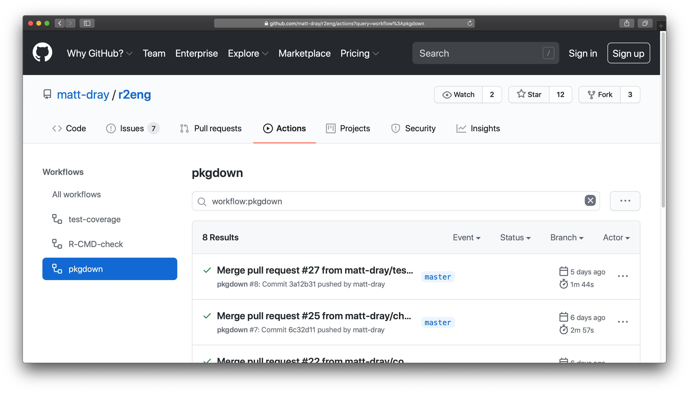
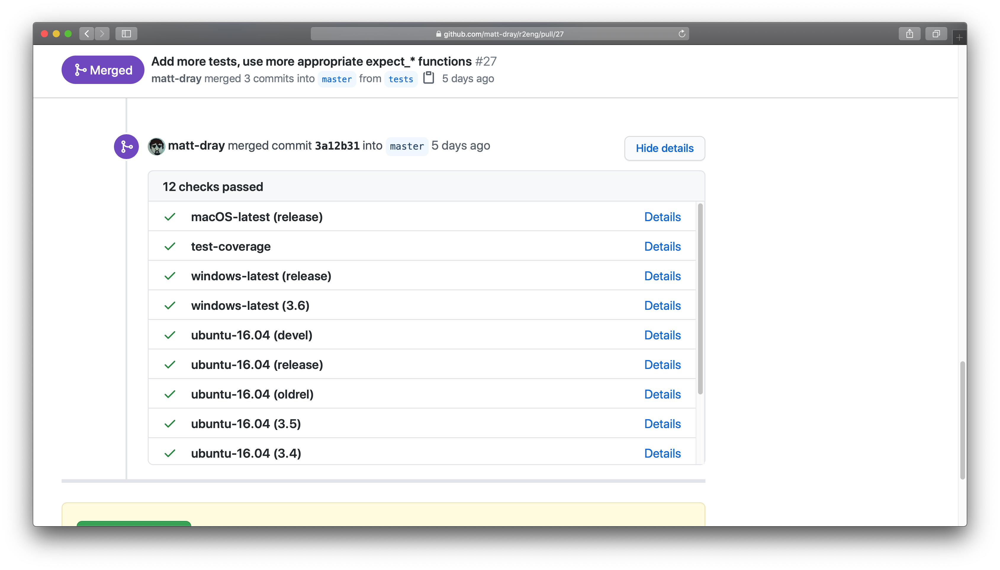
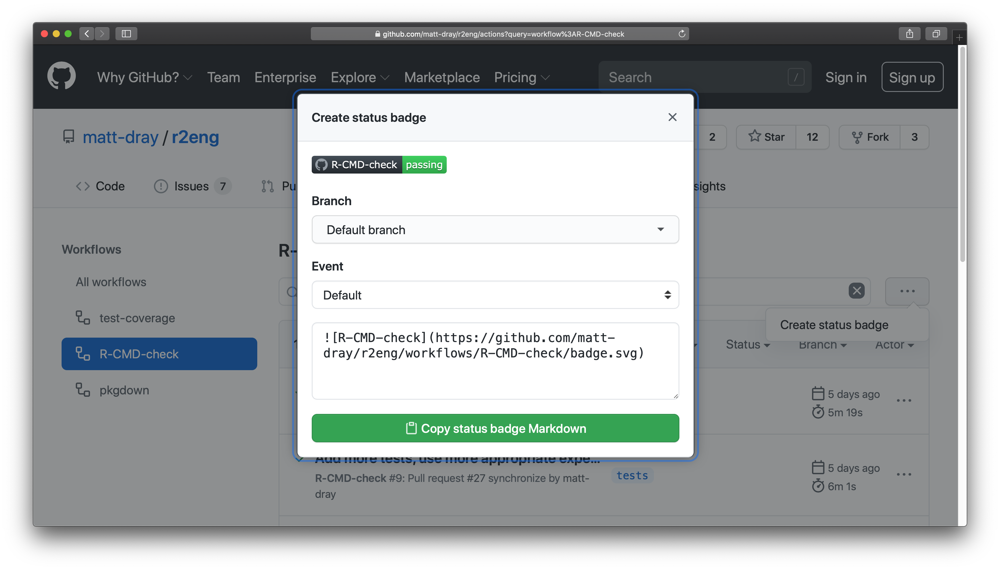

usethis::use_github_action_check_standard()
tl;dr
You can trigger GitHub Actions to build and test your R package after a push or pull request. Create .github/workflows/ in your repo and add pre-prepared actions by the r-lib team with usethis::use_github_action().
Shortcut
I refer back to this post a lot, so here’s some jump-links to the sections with the code I need:
Otherwise read on for a more thorough explanation of GitHub Actions in the context of R packages.
Lights, camera…
GitHub Actions is a service that can be triggered to run workflows that build, test and deploy your code on GitHub. In other words, a continuous integration platform baked right into GitHub.
Before you start, I recommend checking out Jim Hester’s talk from rstudio::conf 2020 and reading the GitHub Actions with R book.
GitHub Actions can be really helpful for developing R packages.1 For example, you can trigger actions with a push or pull request (PR) that:
- run an R CMD build check of your package on multiple platforms
- run your {testthat} unit tests
- check test coverage with {covr} and Codecov
- rebuild your {pkgdown} website
Checking the build and coverage are standard practices for package development. They help ensure that your package works and is stable. GitHub Actions provides the icing on the cake by doing these things automatically.
These are all important for users of your package too. Build and coverage results show the robustness of the code and a website makes your documentation much easier to access.
I wrote this post to remind me how to do it.
…Actions
How are actions stored, recognised and triggered?
Actions are expressed in YAML script files that read like a recipe for what to run and when to run it. You put these files in your repo at the path .github/workflows/, where GitHub recognises them. The information is interpreted and the actions are run remotely given the specified trigger.
You can learn more about the content of these YAML files from the GitHub actions with R book.
You could set these up manually, but actually you can shortcut the process with the {usethis} package and some pre-written examples.
{usethis} and r-lib
{usethis} helps to shortcut the tedious setup steps of R packages and projects. It also includes functions to add GitHub Actions to your R package for you.
In particular, usethis::use_github_action() will add a YAML file to .github/workflows/ where GitHub Actions will find it; you just supply the name of a pre-written action.
Where do these pre-written actions come from? Well, the kind folks at r-lib have made a repo of R-focused examples that you can use.
Example: {r2eng} package
I recently used this method to set up GitHub Actions for the in-development {r2eng} package.
{r2eng} has three actions in the workflow folder:
R-CMD-check.yaml(see the YAML file) to run a build checktest-coverage.yaml(YAML) to assess how much of the code is protected by testingpkgdown.yaml(YAML) to build the package’s website with {pkgdown}
This is a typical, minimal set of actions that suit me when developing R packages. Let’s talk them through.
1. Build check
An R CMD check2 runs a bunch of tests on your package (including your own unit tests) and returns errors, notes and warnings. You’re aiming for a passing build to prove the package is up to scratch.
{usethis} has three actions-related functions specifically for setting up the build check. The standard one will run the R CMD check on macOS, Linux and Windows to make sure it passes across all these platforms.3
Run this line to add the R-CMD-check.yaml action to the .github/workflows/ folder:
Note that this function will create .github/workflows/ if it doesn’t already exist.
Folllowing a push or PR, GitHub Actions will now automatically set up and run a build check on each OS to make sure the package meets the requirements.
2. Test coverage
The R CMD check runs your unit tests, but it doesn’t calculate how much of your code is actually covered by testing. Ideally you want this to be 100%, but also bear in mind that the metric doesn’t take account of the volume or quality of tests.
I use another r-lib package, {covr}, to interactively check how much of my code is tested. (In particular, the covr::report() function provides an interactive HTML report showing the total percentage and a line-by-line breakdown of where tests are missing.)
You can set up the free services Codecov or Coveralls to make your results public. You’ll need to have signed up for these services and granted their access to the repo you want to report on.
{usethis} makes it easy to set up these services for your repo: it adds the relevant YAML files, a line to the ‘Suggests’ section of your DESCRIPTION, and a badge to your README.
usethis::use_coverage("codecov")You can see an example in action on the Codecov page for {r2eng}, which shows the percentage of coverage, a breakdown of the lines ‘hit’ and ‘missed’, and the commits that led to checks.
Of course, you can automate this. Run this line to add the test-coverage.yaml action to the .github/workflows/ folder
usethis::use_github_action("test-coverage")The ‘test-coverage’ GitHub Action will recheck coverage when you next push to the repo, with the results being updated on your coverage service of choice.
3. Build {pkgdown} site
{pkgdown}, also from r-lib, can automatically and painlessly generate a simple website from your package’s documentation, which you are free to customise. You can serve the site on the web via GitHub Pages so users can access the docs easily online.
For example, here’s the {pkgdown} website for the {r2eng} package, which uses default settings at time of writing. You can see that the README has become the home page and there are ‘Reference’ and ‘Changelog’ tabs that autopoulate with the function documentation and NEWS file. Additional tabs are added here depending on the contents of your repo; for example, vignettes are added to an ‘Articles’ tab if they exist.
The GitHub Actions with R book has a section on {pkgdown}. In short, the steps are:
- Set-up an empty ‘gh-pages’ branch in your repo (the book has some code to do this from the command line)4
- Back in the main branch, run the {usethis}
usethis::use_pkgdown()to activate {pkgdown} for your package repo - Run
usethis::use_github_action("pkgdown")to add the YAML file that tells GitHub Actions to build the website on push - Push to your repo and GitHub Actions will generate the website files in the gh-pages branch
- From your repo settings, set GitHub Pages to serve from the root of the gh-pages branch
- Wait a few minutes and navigate to your site (in the form ‘username.github.io/reponame’)
GitHub Actions will now rebuild the site automatically every time you make changes and push them.
Tickety-boo
You’ll get the full results of the actions in the ‘Actions’ tab of your repo on GitHub. A successful check gets a satisfying tick next it. A failing test gets a cross. You can select a result and expand the results to trace exactly what the error was.
This is handy because you and your users can check the results of your checks from the ‘Actions’ tab of you repo without leaving GitHub.
It also means you can spot a failing PR and provide more commits to fix it before it gets merged.

You can also generate Markdown badges5 for your README that display the results of these actions and automatically update when they’re re-run. These are great for an at-a-glance understanding of a package’s development state. {usethis} adds these to your README automatically, but it’s useful to know that you can get these badges from GitHub itself.

For example, you can see badges in the {r2eng} README, like this one showing the percentage of test coverage:

Clicking them takes you to the relevant codecov.io page for the full breakdown of results.
Other platforms are available
So, I think a combo of {usethis} and r-lib’s pre-prepared YAML files is the simplest route to auto-checking your R package and rebuilding its site.
There are many other YAML examples from r-lib though, and you can write your own. There’s also an ‘awesome list’ of more general-purpose actions to explore.
It’s important to note that there are several other platforms for continuous integration, like Travis CI and Appveyor (see Roger Peng’s book for an overview), but this requires you to setup multiple accounts and configuration files. At time of writing, GitHub Actions has the benefit of testing across all the major operating systems and is easier to set up (learn more in Jim Hester’s talk).
Anyway, good luck in putting a GitHub Action in action on GitHub.
Environment
Session info
Last rendered: 2023-07-19 21:21:21 BSTR version 4.3.1 (2023-06-16)
Platform: aarch64-apple-darwin20 (64-bit)
Running under: macOS Ventura 13.2.1
Matrix products: default
BLAS: /Library/Frameworks/R.framework/Versions/4.3-arm64/Resources/lib/libRblas.0.dylib
LAPACK: /Library/Frameworks/R.framework/Versions/4.3-arm64/Resources/lib/libRlapack.dylib; LAPACK version 3.11.0
locale:
[1] en_US.UTF-8/en_US.UTF-8/en_US.UTF-8/C/en_US.UTF-8/en_US.UTF-8
time zone: Europe/London
tzcode source: internal
attached base packages:
[1] stats graphics grDevices utils datasets methods base
loaded via a namespace (and not attached):
[1] htmlwidgets_1.6.2 compiler_4.3.1 fastmap_1.1.1 cli_3.6.1
[5] tools_4.3.1 htmltools_0.5.5 rstudioapi_0.15.0 yaml_2.3.7
[9] rmarkdown_2.23 knitr_1.43.1 jsonlite_1.8.7 xfun_0.39
[13] digest_0.6.33 rlang_1.1.1 evaluate_0.21 Reuse
CC BY-NC-SA 4.0